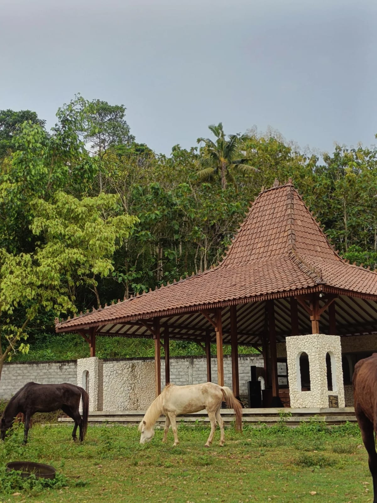

Jalarta Stable merupakan tempat wisata berkuda yang berlokasi di kawasan Gunungkidul, Yogyakarta. Tempat ini hadir sebagai salah satu destinasi wisata yang menawarkan pengalaman berkuda sekaligus menikmati keindahan alam dan suasana pedesaan. Melalui kegiatan wisata berkuda keliling desa, Jalarta Stable memberikan kesempatan kepada pengunjung untuk mengenal dunia berkuda, mempelajari dasar-dasar menunggang kuda, serta menikmati pengalaman wisata yang berbeda.
Apa Itu Jalarta Stable?



Tidak hanya berfokus pada wisata berkuda, Jalarta Stable juga menghadirkan berbagai layanan dan kegiatan menarik, seperti jasa berkuda untuk foto prewedding, yang memberikan pengalaman dan suasana unik bagi pasangan yang ingin mengabadikan momen istimewa bersama kuda. Selain itu, Jalarta Stable juga turut menghadirkan pengalaman berkuda dalam kegiatan kirab budaya, sebagai bentuk partisipasi dalam memperkenalkan dan melestarikan tradisi serta budaya lokal melalui kehadiran kuda dalam kegiatan kebudayaan.